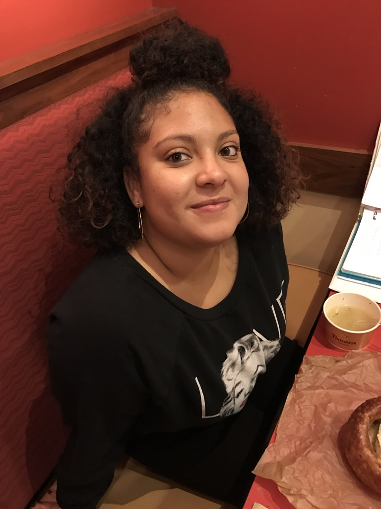

A comprehensive showcase of my achievements, growth, and contributions in special education.

This portfolio showcases my accomplishments, growth, and contributions as a special education teacher at PS 105 The Bay School. The following timeline highlights key milestones in my professional development.